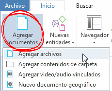
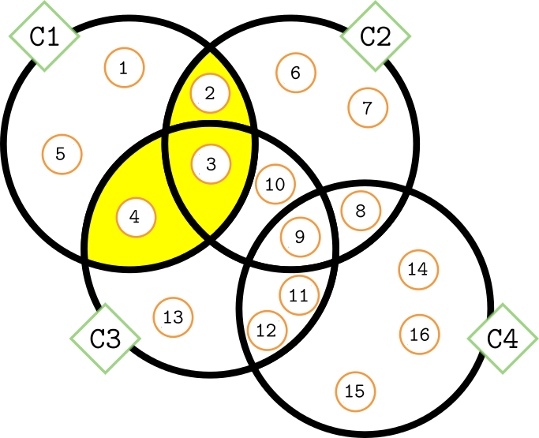

Análisis con Atlas.ti 8
Juan Muñoz
Universitat Autònoma de Barcelona
juan.munoz@uab.cat
http:/juan.psicologiasocial.eu

¿Qué permite?

- Organización e integración
- Datos multimedia
- Búsqueda y recuperación
- Vinculación
- Representación gráfica
- Trabajo en equipo
Manifiesto vs. latente


Ejemplo: códigos-categorías-temas
 Graneheim & Lundman (2004, p. 108)
Graneheim & Lundman (2004, p. 108)
Narrativas sobre hipoglucemia

Fases del análisis (Atlas.ti)

Transcribir: herramientas

Software
Soundscriber: http://www-personal.umich.edu/~ebreck/sscriber.html
¿Realidad?
Convenciones “jeffersonianas”

Jefferson (2004, p. 15)
Control de versiones

Y luego…


Unir proyectos

Añadir documentos


Descargar y descomprimir https://bit.ly/2tboqvO
- Inicio > Agregar documentos > Agregar archivos
- Gestor de documentos > Crear comentarios de documentos
Crear memos-anotaciones

- Crear una memo
- Etiquetarla como “Proceso”
- Describir los pasos dados hasta el momento
- Guardar
- Crear una memo “Objetivos”
Reducción
[En la investigación cualitativa] el reto es dar sentido a una cantidad masiva de datos, reducir el volumen de información, identificar pautas significativas, y construir un marco para comunicar la esencia de lo que revelan los datos.
Patton (1990, pp. 371–372)

Ejercicio: Segmentación

- Crear citas “libres” en varios documentos.
- Eliminar citas.
- Modificar tamaño de citas.
- Explorar citas con el Administrador de citas y con el Navegador de citas.
Relaciones

Ejercicio: Relaciones entre citas

- Crear relaciones entre citas del mismo/diferente documento.
- “Navegar” entre citas.
- Explorar relaciones con el Administrador de vínculos.
Ejercicio: Crear/abrir copia


Comparación constante


Friese (2011)
Ejercicio: Depurar códigos
Descargar: https://bit.ly/2TKfOaX

- Generar Informe de todas las citas de un código.
- Generar informe de un conjunto de códigos.
- Dividir un código en dos.
- Fusionar varios códigos.
Analizar

Co-ocurrencias

Co-ocurrencias

Tabla de co-coocurrencias

Agrupar

Pregunta 1b
¿Cómo presentan esa información los diferentes diarios?
- Escribir Memo
- Grupos de documentos.
- Grupos inteligentes de documentos.
- Activar filtro global.

Grupos “inteligentes”
| + Derechas | - Derechas | |
|---|---|---|
| Pre (15 marzo) | ||
| Post |

Pregunta 2
¿Qué características tienen los contenidos que son citas textuales?
- Codificar todos los fragmentos entre cualquier tipo de comillas.
- Tabla de co-coocurrencias.
- Ver memo “co:Citas literales”.
- Y… Autocodificar.

Autocodificación

Autocodificar siguiendo las instrucciones del memo.
(Puedes hacer pruebas en https://regex101.com/)
Codificación de grupo focal

Tipos de relaciones
Estructura: Grupos de códigos…

Estructura: Grupos de códigos

Estructura: Relaciones entre códigos…

Redes temáticas

Redes

Redes

Consultas

Consultas: Operadores Booleanos

Construcción de una consulta
Todas las citas codificadas como C1 Y C2 O como C1 y C3


Construcción de una consulta
Todas las citas codificadas como C1 O C2 pero NO como C3


Construcción de una consulta
Todas las citas codificadas como C1 O C2 O como C3 Y C4 Y NO como C1 Y C3


Operadores Semánticos

Operadores Semánticos

Operadores de Proximidad